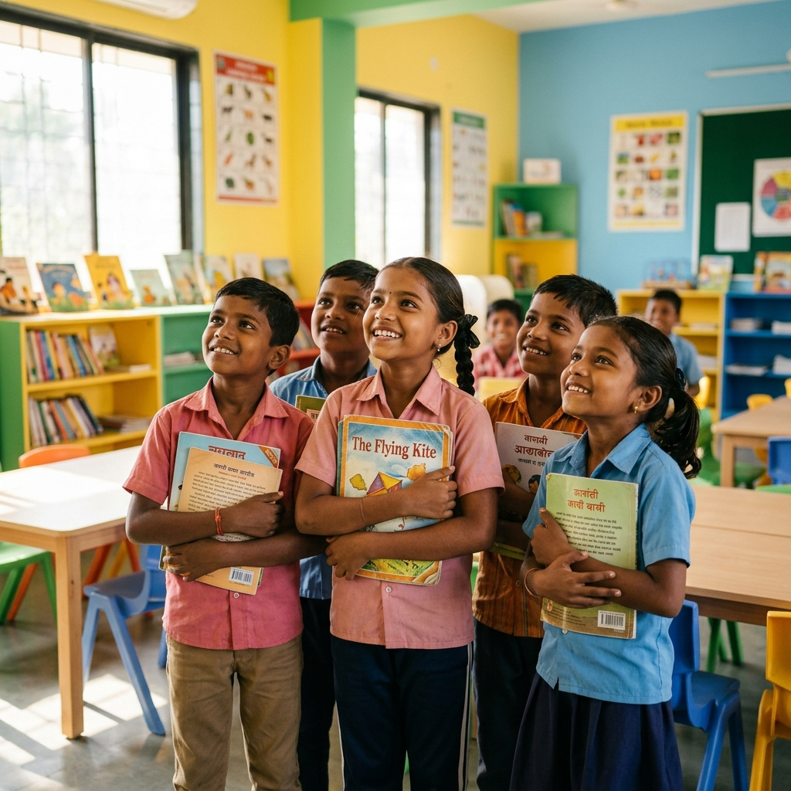

Giving flight to hopes, dreams, and futures since 2021.

NayePankh Foundation was founded in 2021 during the peak of the COVID-19 pandemic by a passionate team of high school students who wanted to make a tangible difference. Dismayed by the hunger and lack of basic resources around them, they pooled together their pocket money to start community feeding drives.
What started as a localized youth initiative in Uttar Pradesh has grown into a government-registered trust operating multiple key social impact programs in education, hunger alleviation, and female hygiene.
To break the intergenerational cycle of poverty by providing direct access to nutrition, health, and qualitative education resources.
An inclusive, progressive India where no child is left behind due to their background, and where women have access to dignified healthcare.
The journey of NayePankh Foundation from a small student group to an active national network.
Founded by high school students during the COVID-19 pandemic. Conducted community kitchens feeding 500+ daily wage earners during lockdowns.
Registered as a trust under the Uttar Pradesh government. Formally launched "Project Shiksha" and "Project Nari" across three district schools.
Obtained 12A and 80G certifications from the Income Tax department. Conducted the first large scale menstrual hygiene workshop for 2,000+ girls.
Expanded distribution networks to multiple cities in North India. Formed college chapters, with over 100 active volunteers and 10,000+ children supported.
The rules of conduct and beliefs that define every drive, partnership, and campaign we run.
We publish clear records of our funding and details of where every single rupee is spent. Donors receive direct, visual drive updates of their contributions.
Being youth-led keeps our actions swift, energetic, and highly innovative. We harness the passion of school and college youth to do ground work directly.
We believe welfare should empower, not create dependence. All our programs are designed to teach skill sets, encourage self-reliance, and respect human dignity.
The young minds steering the NayePankh Foundation toward long-term social impact.
Undergraduate student who started the NGO in high school during COVID to support marginalized families.
Drives the logistics and field distribution networks. Oversees educational camps and volunteer tasks.
Manages Project Nari and public partnerships. Leads hygiene and menstrual safety workshops.
Verify our credentials. Your trust and donation security are paramount to us.
Donations qualify for a **50% tax exemption** under Section 80G of the Income Tax Act, 1961.
Registered as a non-profit organization under section 12A of the Income Tax Act, exempting foundation income for welfare work.
Incorporated under the Societies Registration Act (Act XXI of 1860) as a social trust within the state of Uttar Pradesh.